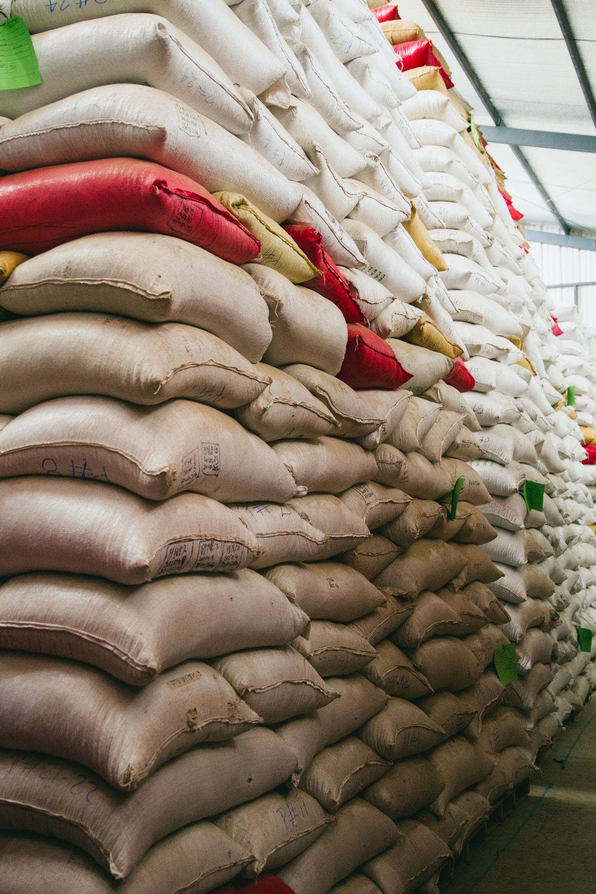
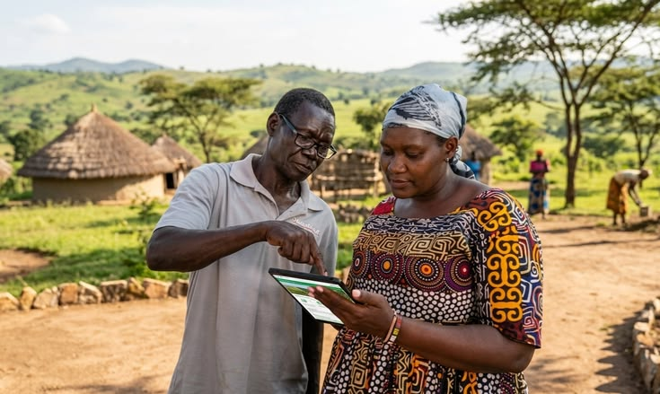
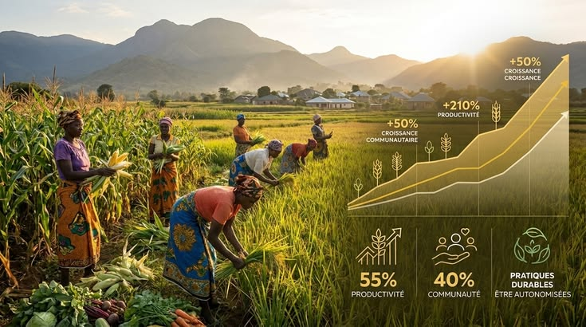

AgriCoop Connect
Cibler pour mieux vendre
Transformez votre coopérative en un partenariat de confiance pour les acheteurs et offrez à vos membres un accès plus simple à des marchés plus rémunérateurs.


Nos engagements
-
Plateforme sur mesure
Une plateforme pensée pour la coopérative : gestion financière, trésorerie et suivi des entrées/sorties.
-
Accessibilité et simplicité
Commercialiser plus vite et donner aux membres un accès simple aux données de la coopérative.
-
Fiable et disponible
Centraliser l’activité pour renforcer la performance et la visibilité auprès des ONG et des banques.
-
Mieux vendre ensemble
Un partenariat de confiance avec les acheteurs, et des marchés plus rémunérateurs pour les producteurs.
Parcours
Comment ça marche
-
Se connecter selon son rôle
Membres et partenaires de la coopérative accèdent à la plateforme selon leur profil — pour gérer et consulter ce qui les concerne.
-

Gérer entrées, sorties et ventes
Suivez livraisons, stocks et paiements au quotidien : commercialisation plus rapide, données centralisées et lisibles.
-

Contrôler et convaincre
Pilotage financier et technique, statistiques et rapport partenaire : plus de visibilité pour ONG, banques et acheteurs de confiance.
Notre mission
Digitaliser pour performer ensemble
AgriCoop Connect aide les coopératives agricoles à assurer leur digitalisation, à vendre plus facilement, à gérer les entrées et sorties, et à renforcer le contrôle financier et technique — comme pour la COMAKI à Kintélé.
- Vendre accès à des marchés plus rémunérateurs
- Gérer entrées, sorties et trésorerie
- Rayonner visibilité ONG et banques
Dans l’outil
Ce que la plateforme permet au quotidien
-
Entrées
Suivre les apports
Enregistrez les livraisons des membres pour une commercialisation plus fluide.
-
Trésorerie

Maîtriser les paiements
Contrôle du solde dû et historique clair pour la gestion financière.
-
Membres
Simplifier l’accès aux données
Les membres et partenaires consultent ce qui les concerne, simplement.
-
Stock

Gérer les sorties
Stock et ventes centralisés pour vendre au bon moment, sans surprise.
-
Performance

Mesurer l’activité
Volumes et classements pour renforcer la performance de la coopérative.
-
Confiance

Rassurer acheteurs et bailleurs
Rapport partenaire chiffré et anonymisé — crédibilité auprès des ONG et banques.
Prêt à cibler pour mieux vendre ?
Découvrez comment AgriCoop Connect digitalise et valorise votre coopérative.
